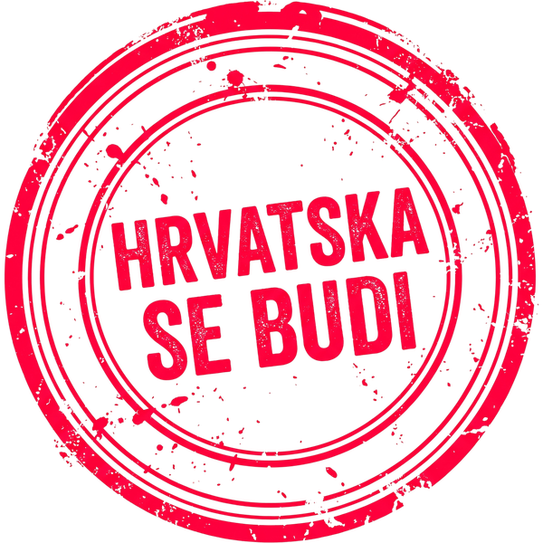

aktivnih ljudi na terenu
Identiteti operativne mreže ne objavljuju se javno – zbog političkog pritiska i zaštite obitelji.
građana koji su se prijavili
Sljedeći cilj: 2.000
Dovoljni su inicijali ili nadimak. E-mail je obvezan jer samo tamo šaljemo interne upute stožera. Ne objavljuje se i ne dijeli.
Često slušamo kako smo u Europskoj uniji mali i kako moramo slušati što Bruxelles naredi. To je najveća zabluda koju nam prodaju domaći političari da opravdaju vlastiti manjak hrabrosti.
Francuska, Poljska i Austrija ne slušaju slijepo pravila – one čitaju sitna slova i štite svoj narod. Možemo zabraniti prodaju strateške imovine pod izlikom nacionalne sigurnosti i preusmjeriti 80% EU fondova u domaće tvornice.
Zašto naša djeca u vrtićima i pacijenti u bolnicama jedu smrznuto meso iz Španjolske staro 6 mjeseci, dok domaća hrana propada?
Rješenje: Država u natječaje za bolnice i škole uvodi obvezni zakonski uvjet: Od branja ili klanja do stola ne smije proći više od 48 sati. Španjolski šleperi padaju na testu, a udruženi hrvatski seljaci dobivaju posao i zarađuju 4 puta više.
Prije svega, podsjetimo se: Rezolucija UN-a (64/292) proglašava pitku vodu temeljnim ljudskim pravom!
Zašto komunalna poduzeća bez problema zavrću ventile obiteljskim kućama, dok u višestambenim zgradama ne smiju isključiti vodu zbog dužnika, već dug rješavaju ovrhom preko FINE?
Gradska uprava obožava kada mislimo da "mali čovjek ne može ništa". Ali zakoni nam daju jasnu moć!
Skupimo li potpise 10% birača, Gradsko vijeće mora po zakonu staviti naš zahtjev na dnevni red i raspravljati u roku od 90 dana. Potpisi 20% birača pokreću obvezujući lokalni referendum za rušenje štetnih odluka. Po uzoru na Karlovac, gdje 70% proračuna prati prijedloge građana, preuzimamo kontrolu.
Mirovine, zdravstvo, stanovanje, sigurnost, selo, voda, proračun, škole i standard. Cijeli program na jednom mjestu.
Pročitaj program →EU, seljaci, voda, struja, lokalna vlast, standard i plan za jedan mandat.
Otvori blog →Hrvatska se budi kreće. Pratite ovu ploču za nove gradove i akcije.